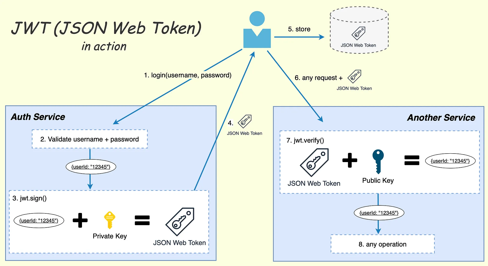
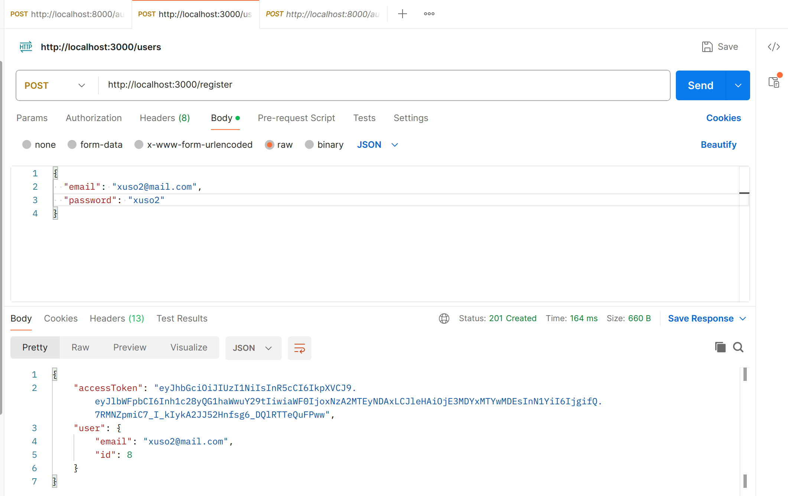

Exemple login JWT
JWT
L'ús de tokens JWT (JSON Web Tokens) per gestionar el procés de login implica diversos passos i pot aportar una capa segura d'autenticació en una aplicació. Aquí tens els passos generals i els conceptes involucrats en la implementació d'un sistema de login amb tokens JWT:
Solicitud d'Inici de Sessió (Login Request): L'usuari envia les seves credencials (com nom d'usuari i contrasenya) al servidor per autenticar-se. Aquesta informació es comprova amb les dades emmagatzemades al sistema.
Generació del Token JWT (JWT Generation): Si les credencials són correctes, el servidor genera un JWT que conté informació rellevant sobre l'usuari, com l'identificador d'usuari i possiblement altres claims (drets d'accés, temps d'expiració, etc.). Aquest JWT és signat amb una clau secreta o privada per assegurar la seva autenticitat.
Enviament del Token al Client: El servidor envia el JWT al client com a part de la resposta a la sol·licitud d'inici de sessió. Aquest token pot ser incrustat en la capçalera d'autorització de les sol·licituds posteriors o emmagatzemat localment pel client.
Emmagatzematge del Token al Client (Client-Side Storage): El client emmagatzema el token. Això pot ser en una cookie segura o a l'emmagatzematge local (localStorage o sessionStorage), depenent de les necessitats de seguretat i de l'arquitectura de l'aplicació.
Inclusió del Token en Sol·licituds Posteriors: Amb cada sol·licitud posterior a recursos protegits, el client inclou el JWT en la capçalera d'autorització com a prova que ha estat autenticat.
Verificació del Token al Servei: El servidor verifica la validesa del JWT amb la seva clau pública o compartida. Això assegura que el token no ha estat alterat i que és vàlid.
Processament del JWT al Servei: Després de verificar la validesa, el servidor processa la informació continguda al JWT. Això pot incloure l'extracció de claims rellevants i la comprovació dels permisos necessaris per accedir als recursos sol·licitats.
Renovació del Token (Optional): Per mantenir la sessió activa, el client pot sol·licitar un nou JWT abans que l'antic expire. Això pot ser implementat amb tokens d'actualització o altres mecanismes.
Tancament de Sessió (Logout): Per tancar la sessió, el client pot destruir o eliminar el token emmagatzemat. Això assegura que, fins i tot si algú aconsegueix el token, no podran utilitzar-lo després que l'usuari hagi tancat la sessió.
L'ús de tokens JWT simplifica la gestió d'autenticació, ja que les dades d'autenticació es poden emmagatzemar de manera segura al mateix token, i aquest pot ser verificat sense la necessitat de mantenir estats de sessió al servidor. Tot i així, és crucial mantenir la seguretat amb pràctiques com l'ús de connexions segures (HTTPS), maneig segur de claus i altres mesures de seguretat.

JSON-SERVER-AUTH
Existeix un mòdul d'autentificació per a json-server que et permet simular un sistema de login. Podeu consultar com funciona a aquesta web
POSTMAN
Llença el servidor tal i com diu la web anterior i feu proves amb POSTMAN per a comprovar com et respon el servidor

Aplicació
Teniu l'aplicació disponible al següent repositori:
Aplicació
https://github.com/xusodocent/login_jwt_vue
Port per al json-server
Si intenteu incorporar el sistema de login al vostre projecte haureu de tindre dues instàncies de json-server al port 3000 i no vos funcionarà. Heu de canviar el port d'una de les dos de la següent forma: json-server arxius.json --port 3001
Protegir la ruta
La forma en que es protegeix una ruta és:
| Text Only | |
|---|---|
Middleware
El codi fa ús d'un middleware per a comprovar si la ruta està protegida. El middleware el trobareu en la carpeta middleware.
Servei
I a la vegada el middleware fa ús d'un servei per a obtindre el token que el trobareu a ../services/auth.js...
Comprovacions del token en un sistema real
Enviament token en capçaleres
Segons com estiga confeccionat el teu servidor podries necessitar enviar el token el les capçaleres de les teues peticions al servidor.
No està implementat en l'aplicació
Aquest apartat és una explicació per a implementar-ho en un sistema real, no en una api de desenvolupament com json-server, per tant no està implementat en l'aplicació que vos he passat.
Per enviar un token JWT des del client implementat en Vue.js a un servidor implementat en Node.js, primer cal gestionar la generació i emmagatzematge del token al client, i després enviar-lo com a part de les sol·licituds HTTP cap al servidor Node.js. A continuació, t'oferiré un exemple senzill utilitzant Axios com a client HTTP al costat del client Vue.js i Express com a servidor Node.js.
1. Client en Vue.js:
Assumirem que ja has implementat l'autenticació i que tens un token JWT disponible quan l'usuari inicia sessió. Aquí tens un exemple senzill de com enviar un token amb Axios des de Vue.js:
Aquest exemple envia una sol·licitud GET a http://localhost:3000/api/ruta_protegida amb l'encapçalament d'autorització que conté el token JWT.
2. Servidor en Node.js amb Express:
Al servidor Node.js, necessitaràs un middleware per verificar i gestionar el token. Aquí tens un exemple senzill amb Express i el paquet jsonwebtoken:
Aquest servidor Express inclou una ruta protegida (/api/ruta_protegida) que verifica el token abans de processar la sol·licitud. La clau secreta ('secret_key') utilitzada per signar el token hauria de ser la mateixa que s'utilitza al client per generar el token.
Aquest exemple és molt bàsic i es pot adaptar segons les necessitats del teu projecte. És important gestionar correctament les claus secretes i assegurar-te que la comunicació estigui protegida mitjançant HTTPS per garantir la seguretat del teu sistema d'autenticació.